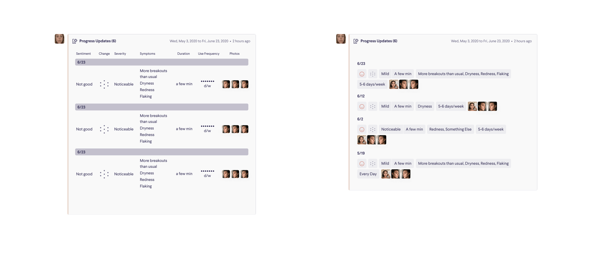
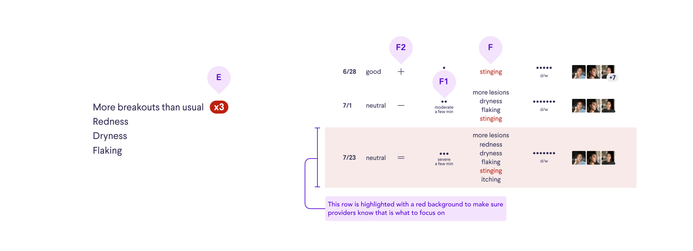

Curology is the leading company in personalized acne and anti-aging care, serving over a million patients with personalized formulations delivered to your doorstep.
Sole product designer on clinician UI
How might we show a large amount of self-reported patient data efficiently and effectively to medical providers?
In 2020, Curology was in the development phases of a new Progress feature. While previously patients reported on their progress via messages to the clinical team, with this new feature patients are asked about their skin progress (both good and bad) through the Curology website. The team hopes that this new Progress feature will result in better prescription efficacy, more brand trust, and more efficiency for the clinical team.
I partnered with another product designer, E, on this project. E took the patient-facing UI, and I took the clinician-facing UI.
As the designer of the clinician side of the Progress feature, I led problem definition via conversations with the medical team lead, the resident UX researcher, product manager, and CTO.
In an ambiguous project, the most important thing is to get a sense of what's set in stone, or the constraints.
In this case, what's set in stone were the questions that we would ask patients via the Progress feature, which were co-developed by the product manager and medical team lead.
Looking at these questions closely, I could categorize the questions based on ones that have magnitudinal answers and ones that don't, as well as ones that had corresponding icons in our design system and ones that don't.
With a semantic understanding of the questions and their answer choices, I pulled out a sketchbook to explore ways to present these questions and answers using interaction and UI paradigms.
The goal of this exploration, which I shared in sketch form with E, the product manager, and the engineering team as early concepts, is to get early buy-in and learn the usability benefits and downsides for the clinicians.
While these sketches may seem rough, they are only meant to capture the concept. With a well-defined design system, I was able to quickly mock them up into our clinician UI and even simulate interactions.
Because we are building this new data visualizer into an existing piece of software which clinicians are highly proficient at, I needed to understand whether these UI paradigms work with existing use patterns that are, at this point, muscle memory.
A few things surfaced in my observations of clinicians:
A few things also came up regarding how they would use Progress submission data:
Further discussions with the broader product team led to some new unknowns.
In a project with unknowns, assumptions and constraints must be formed and agreed upon so the team can move forward, because often unknowns can't be resolved until a feature is shipped. I pushed for an alignment meeting with my product manager and a few others to make sure that we had alignments on requirements.
The alignment was to ship a visualization that:
A combination of the constraints and user testing with clinicans led me to decide on the table paradigm.
Compared to the masonry and graph paradigms, the table:
This layout prioritizes at-a-glance viewing of information from a single update with photos upfront, while other individual updates are navigated along a horizontal timeline, keyed green or red based on the reported sentiment. Masonry allows easy insertion of unanticipated progress user answers in the future. Providers can even reconfigure order to their preference.
This layout prioritizes quick scanning of data both horizontally in a single submission and vertically down a column. Some information that is less useful can be hidden in an accordion view, allowing the table to display a lot of information without scrolling.
This layout visualizes magnitudinal answers on a graph using a graphing library, allowing providers to notice trends across submissions. The exact user responses are also displayed on the side when the provider hovers over a date on the graph.
With a decision to move forward with the table layout, it's time to really take a look at how we can optimize this.
Certain submissions are critical enough that it immediately triggers a clinician review.
For each trigger case, we need a way to display what triggered the review to the clinician.
With a team of providers using this interface hundreds of times a day, day in and day out, it was important to consider all details. One such detail is the icon language we use to convey skin change.
The goal was to find a way that communicates to providers skin change most quickly and without misintrepretation.
After several rounds of optimization and testing with the medical team, it was time to move this project to the engineering phase.
Feasibility went through a final check, and I helped write tickets with the product manager.
With a table layout, I was able to lead the team to a design that was highly effective and could be implemented quickly enough so that the team could learn more about how the Progress feature performs.
This project also allows Curology to increase efficiency and provide more accurate and responsive care. The more effective Curology's care is, the more likely a patient will stay and recommend the subscription to friends.